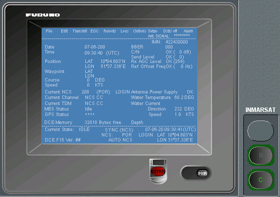

Inmarsat C
Este panel es un mimético simulado del equipo Furuno FELCOM-15. Contiene los controles y la mayor parte de la funcionalidad del equipo real. En unidades equipadas también con terminal Inmarsat A o B, se presenta este panel pulsando el botón C que se encuentra junto al panel Inmarsat.
La funcionalidad del equipo puede consultarse en su Manual de Operador que se adjunta como anexo. No está implementada la funcionalidad correspondiente a la opción Edit, ni parte de las funciones incluidas en las opciones Options y Setup del menú principal al ser características particulares del equipo que no son imprescindibles para su funcionamiento.

Encendido del Terminal
El terminal Inmarsat C se enciende pulsando el botón PWR. Tras el encendido se presenta la Pantalla de Espera que incluye la siguiente información:
- Nivel de señal. Representado por un número de asteriscos entre cero (sin señal) y 8 (nivel máximo).
- Fecha y hora UTC actual.
- Satélite con el que se está conectado y estado de la comunicación. La comunicación no es posible hasta estar registrado en el sistema Inmarsat (ver proceso de Login).
- Datos de navegación de la unidad.

La Pantalla de Espera también incluye el Menú Principal. Sus opciones pueden abrirse seleccionándolas mediante el ratón o pulsando las teclas de función F1 a F10.
Gestión de Archivos de Mensajes
El menú File contiene las opciones necesarias para crear, nombrar, archivar e imprimir mensajes.

Desde este menú es posible realizar las siguientes acciones:
- · Crear un nuevo mensaje. Al seleccionar la opción New se presenta la Pantalla de Edición donde se puede escribir el texto del mensaje.
- Archivar el mensaje creado / editado. Mediante las opciones Close o Save es posible archivar el mensaje creado o editado. Con Close el texto del mensaje es eliminado de la Pantalla de Edición mientras que con Save el texto permanece.
- Editar o consultar un mensaje archivado. Al seleccionar la opción Open se presenta la lista de mensajes archivados.
- Borrar un mensaje archivado. Al seleccionar la opción Delete la aplicación solicita el nombre del mensaje a borrar.
- Renombrar un mensaje archivado. Al seleccionar la opción Rename la aplicación solicita el nombre del mensaje a renombrar.
- Imprimir un mensaje. Al seleccionar la opción Print la aplicación solicita el nombre del mensaje a imprimir.

Al utilizar Close se presenta la siguiente ventana donde el operador puede seleccionar si desea salvar el mensaje o no.

Si se selecciona YES en la anterior ventana o se usa la opción Save, la aplicación solicita la introducción del nombre del fichero presentando la siguiente ventana:

Tras introducir el nombre del fichero pulsar la tecla Enter.

Con las teclas de flecha (abajo y arriba) seleccionar el mensaje y pulsar la tecla Enter. El texto del mensaje estará disponible en la Pantalla de Edición.

Con las teclas de flecha (abajo y arriba) se puede seleccionar el mensaje a borrar. Una vez seleccionado pulsar Enter y el mensaje será eliminado.

Con las teclas de flecha (abajo y arriba) se puede seleccionar el mensaje. Una vez seleccionado escribir el nuevo nombre y pulsar Enter.

Con las teclas de flecha (abajo y arriba) se puede seleccionar el mensaje. Una vez seleccionado pulsar Enter. El mensaje se imprimirá en la impresora asociada al terminal Inmarsat.
Edición de texto de mensajes
No se han implementado las opciones del menú Edit pero se puede cortar y pegar texto mediante las combinaciones de teclas Ctrl + X, Ctrl + C y Ctrl + V.
Configuración del Terminal
El menú Setup permite configurar la alerta de socorro. También incluye opciones para registrar los datos de estaciones costeras y unidades participantes en el ejercicio a través de la opción Configuration.
 |
 |
Desde este menú es posible realizar las siguientes acciones:
- Registrar estaciones. Al seleccionar la opción Configuration - Station List se presenta la lista de estaciones.
- Station Group: Grupo al que pertenece la estación. Hasta 5 caracteres.
- Station Name: Nombre de la estación (hasta 15 caracteres).
- Destination Type: Tipo de comunicación. Se puede seleccionar uno de los siguientes tipos: Telex, Fax, E-Mail, CSDN (circuito de red conmutada de datos), PSDN (red de datos conmutada por paquetes), X400, DNID (ID de red de datos) y SPEC (servicios de seguridad con código especial de dos dígitos).
- Prefix Code. Código de 3 dígitos.
- Country Code: Código de País o Código de Región Oceánica en el caso de comunicación Telex o Fax.
- Station ID: Número de télex o número de fax de la unidad.
- Modem Type: Tipo de modem. Se puede seleccionar uno de los siguientes: T30, V21, V22,V22B, V23, V26B, V26T, V27T, V32 y Other.
- E-Mail Address: Dirección de correo electrónico.
- Remarks: Comentario de hasta 20 caracteres.
- Registrar estaciones costeras. Al seleccionar la opción Configuration - LES List se presenta la lista de estaciones costeras.
- Configurar el mensaje de socorro. El mensaje de socorro es posible configurarlo seleccionando la opción Distress Alert Setup. Al seleccionarla se presenta la siguiente ventana en la que se puede elegir la LES a la que enviar el mensaje y la naturaleza del peligro.

Con las teclas de flecha (abajo y arriba) se puede seleccionar la estación que se desea editar o consultar. Para introducir una nueva estación seleccionar una posición de la lista no ocupada. Al pulsar la tecla Enter se presenta la siguiente ventana donde se pueden introducir los datos de la estación:

Para cada estación se pueden introducir los siguientes datos:
Para introducir un dato seleccionar el campo correspondiente con el ratón o pulsar la tecla Tabulación hasta situar el cursor en el campo deseado.
| Códigos de Región Oceánica | |||
| Atlántico-Este | Pacifico | Índico | Atlántico-Oeste |
| 581 | 582 | 583 | 584 |
Una vez introducidos o editados los datos de la estación pulsar Enter para salvar los cambios o Escape para abandonar la ventana sin salvar los datos. Para eliminar una estación de la lista editarla y borrar su nombre.

Con las teclas de flecha se puede seleccionar la estación costera que se desea editar o consultar. Para introducir una nueva estación costera seleccionar una posición de la lista no ocupada. Al pulsar la tecla Enter se presenta la siguiente ventana donde se pueden introducir los datos de la estación costera: Nombre, Código (3 dígitos), Comentario y coste de sus servicios.

Una vez introducidos o editados los datos de la estación pulsar Enter para salvar los cambios o Escape para abandonar la ventana sin salvar los datos. Para eliminar una estación de la lista editarla y borrar su nombre.

La LES a la que enviar la alerta puede seleccionarse con las teclas de flechas (arriba y abajo) a partir de la lista de LES previamente registradas. Se presentará un aviso de error si la LES seleccionada no está situada en la región Inmarsat en la que se encuentra la unidad.
La naturaleza del peligro puede seleccionarse también mediante las teclas de flecha.
Transmisión de mensajes
Las opciones del menú Transmit permiten el inicio y cancelación de la transmisión de un mensaje. Antes de transmitir un mensaje es necesario registrar los códigos de estaciones costeras y los números de télex de las unidades participantes en el ejercicio así como preparar y archivar el texto de los mensajes a transmitir.

Desde este menú es posible realizar las siguientes acciones:
- Transmitir un mensaje. Al seleccionar la opción Transmit Message se presenta la siguiente ventana donde se puede seleccionar el mensaje a transmitir y la unidad destinataria. Se accede a los diferentes campos de la ventana seleccionándolos con el ratón o pulsando la tecla Tabulación hasta situar el cursor sobre el campo deseado. En algunos campos se puede seleccionar su valor de una lista mediante las teclas de flecha (arriba y abajo).
- Seleccionar la prioridad del mensaje (Routine, Safety, Urgent o Distress).
- Seleccionar el mensaje a transmitir de la lista de mensajes archivados.
- Seleccionar la estación destinataria de la lista de estaciones registradas. Al seleccionar una estación se presentará el tipo de comunicación y su número incluyendo código de país o región oceánica. Si la estación destinataria no está registrada puede introducirse su número y tipo de comunicación a través del teclado.
- Seleccionar la LES a utilizar para la transmisión del mensaje de la lista de estaciones costeras registradas.
- Seleccionar las opciones del envío: con o sin confirmación y envío inmediato o diferido. En este último caso se introducirá el tiempo de retraso en minutos.
- Cancelar la Transmisión de un mensaje. Al seleccionar la opción Cancel se presenta la lista de los mensajes aún no completamente transmitidos. La lista presenta el nombre del archivo en transmisión, el número de la unidad destinataria, la LES a través de la que se realiza la transmisión, la prioridad y el estado de la transmisión. El estado puede ser uno de los siguientes: Waiting (en espera de transmisión) y Sending (en transmisión).

Para transmitir un mensaje es necesario realizar los siguientes pasos.
Una vez introducidos los datos, seleccionar [TRANSMIT] y pulsar Enter. El mensaje se transmitirá a la estación costera seleccionada que lo retransmitirá a la estación destinataria.

Mediante las teclas de flecha seleccionar el mensaje cuya transmisión se desea cancelar. Pulsar Enter y la aplicación pedirá confirmación para la cancelación de la transmisión.

Listado de mensajes transmitidos o recibidos
El menú Logs contiene las opciones necesarias para presentar el listado de los mensajes enviados, recibidos o mensajes EGC.

Desde este menú es posible realizar las siguientes acciones:
- · Listar los mensajes transmitidos. Al seleccionar la opción Send Message Log se presenta el listado de los mensajes transmitidos. La lista presenta el nombre del archivo en transmisión, el número de la unidad destinataria, la LES a través de la que se realiza la transmisión, la prioridad y el estado de la transmisión.
- Waiting: Mensaje en espera.
- Sending: Mensaje en transmisión.
- Cancel: Transmisión del mensaje cancelada.
- Fecha y hora del envío si éste se ha realizado.
- Complete: mensaje transmitido satisfactoriamente.
- En blanco: no se ha recibido todavía información de la entrega.
- OCC(002): entrega intentada (dos veces); destinatario ocupado.
- ABS: destinatario ausente.
- BK: mensaje abortado.
- BMC: no se ha recibido fin de mensaje o de transmisión.
- DER: fuera de servicio.
- DTE: corte de la DTE remota.
- EOS: servicio no contratado (E-mail).
- FMT: error de formato.
- IAB: answerback no válido.
- INC: solicitud no definida (E-mail).
- INF: llamar al servicio de información de la red.
- INV: llamada no válida.
- ITD: esperando la entrega.
- LDE: excedida la máxima longitud de mensaje.
- LPE: error de procedimiento local.
- NA: acceso bloqueado.
- NC: congestión de la red.
- NCH: el número del destinatario ha cambiado.
- NP: no obtenible.
- NRC: cobro revertido no aceptado por el destinatario.
- RIS: destinatario mal especificado (E-mail).
- RDI: llamada desviada.
- RPE: error de procedimiento remoto.
- RSB: todavía se intenta la retransmisión.
- TMD: excedido el número máximo de direcciones.
- UNK: estado desconocido.
- Listar los mensajes recibidos. Al seleccionar la opción Receive Message Log se presenta el listado de los mensajes recibidos. Para cada uno de los mensajes la lista presenta el número asignado al mensaje recibido (combinando la fecha y hora de recepción), la LES a través de la que se realiza la transmisión, la prioridad, el tamaño del mensaje, la fecha y hora de recepción y el estado (impreso, salvado o en blanco).
- Listar los mensajes EGC recibidos. Al seleccionar la opción EGC Log se presenta el listado de los mensajes EGC recibidos. Para cada uno de los mensajes la lista presenta el número asignado al mensaje recibido (combinando la fecha y hora de recepción), la LES a través de la que se realiza la transmisión, la prioridad, el tamaño del mensaje, la fecha y hora de recepción y el tipo de mensaje.

El estado de transmisión se presenta mediante dos campos Status y Delivery:
Status presenta el estado de la transmisión. Puede ser uno de los siguientes:
Delivery presenta el estado de entrega al destinatario. Puede ser uno de los siguientes:
Mediante las teclas de flecha es posible seleccionar un mensaje de la lista. Al pulsar Enter se presenta una ventana con el contenido del mensaje.


Mediante las teclas de flecha es posible seleccionar un mensaje de la lista. Al pulsar Enter se presenta una ventana con el contenido del mensaje.


Mediante las teclas de flecha es posible seleccionar un mensaje de la lista. Al pulsar Enter se presenta una ventana con el contenido del mensaje.

Mediante las teclas de flecha (derecha e izquierda) es posible presentar el siguiente o el anterior mensaje en la lista.
Recepción de mensajes
Cuando se recibe un mensaje de télex o de correo electrónico suena una alarma. Se presenta la lista de mensajes recibidos y el mensaje se imprime en la impresora correspondiente al terminal Inmarsat. La alarma puede silenciarse seleccionando la opción Alarm del menú principal.
El sistema almacena los mensajes recibidos o transmitidos por lo que el mensaje recibido puede consultarse posteriormente siguiendo el procedimiento descrito en el punto anterior.
Recepción de mensajes EGC
El menú EGC permite acceder a los mensajes EGC recibidos:

Seleccionando la opción Display EGC Message se presenta la ventana con el contenido del último mensaje EGC recibido. La ventana es la descrita en el punto correspondiente al Listado de Mensajes EGC Recibidos.
En la recepción de mensajes EGC la alarma solo suena si el mensaje es urgente o de socorro.
Opciones
El menú Options contiene las opciones que permiten controlar el registro de la estación en el sistema Inmarsat.

Desde este menú es posible realizar las siguientes acciones:
- Login. Al seleccionar la opción Login se inicia el proceso para registrar la estación en el sistema Inmarsat. Es necesario estar registrado en el sistema Inmarsat para poder realizar comunicaciones Inmarsat. Mientras dura este proceso se presenta la siguiente ventana.
- Logout. Al seleccionar la opción Logout se inicia el proceso para poner la estación como inactiva en el sistema Inmarsat. Es conveniente utilizar esta opción cuando no se va a utilizar el terminal durante un periodo prolongado de tiempo. Mientras dura este proceso se presenta la siguiente ventana.
- · Seleccionar la NCS. Al seleccionar la opción Ocean Region se presenta la siguiente ventana en la que se puede seleccionar la NCS con la que queremos conectarnos. Si se selecciona Auto el sistema seleccionará la NCS en función de la posición de la unidad.

Tras pocos segundos termina el proceso de Login presentándose en la zona inferior de la Pantalla de Espera el texto Successful Login y el texto Login junto a los datos de la NCS. El estado de Login se mantiene hasta realizar Logout aunque se apague el terminal o se cambie de región oceánica.
Se presentará un aviso de error si al comenzar el proceso, no hay NCS seleccionada o la estación no está sincronizada con la NCS (se presenta el texto UNSYNC en la zona inferior de la Pantalla de Espera). En este caso, seleccionar la región oceánica adecuada a la posición de la unidad (o seleccionar la opción Auto) y volver a intentarlo.
Al comenzar el juego las unidades que actúen como estaciones costeras se iniciarán en estado de login y no podrán realizar logout.

Tras pocos segundos termina el proceso de Logout presentándose en la zona inferior de la Pantalla de Espera el texto Successful Logout y el texto Logout junto a los datos de la NCS.

Una vez seleccionada la NCS verificar el estado de sincronismo de la estación. Si en la zona inferior de la Pantalla de Espera se presenta el texto UNSYNC es necesario seleccionar otra NCS.
Comunicaciones de Socorro
Para transmitir una alerta de socorro mantener pulsado durante al menos 4 segundos el botón Distress del terminal. El mensaje de socorro será enviado automáticamente a la LES seleccionada en los datos de configuración del mensaje de socorro (ver el apartado Configurar el mensaje de socorro). Si se dispone de tiempo se puede seleccionar en dichos datos la naturaleza del peligro antes de enviar la alerta.
El mensaje de socorro se reenvía periódicamente hasta que se pulsa el botón DSTRS Off del menú principal.
Cuando se recibe el acuse de recibo desde la estación costera se presenta Distress Acknowledgement Received en la zona superior de la pantalla del terminal.
También es posible preparar y enviar un mensaje de socorro con más información que la proporcionada en la alerta siguiendo el procedimiento descrito en el apartado Transmitir un Mensaje. Solo es necesario seleccionar como prioridad Distress, seleccionar el archivo con el mensaje de socorro y seleccionar la LES a la que se le quiere enviar el mensaje.
En la unidad que recibe el mensaje suena una alarma y el botón C del panel inmarsat parpadea. Pulsando el botón DSTRS Off o Alarm del menú principal se detiene la alarma y el parpadeo.